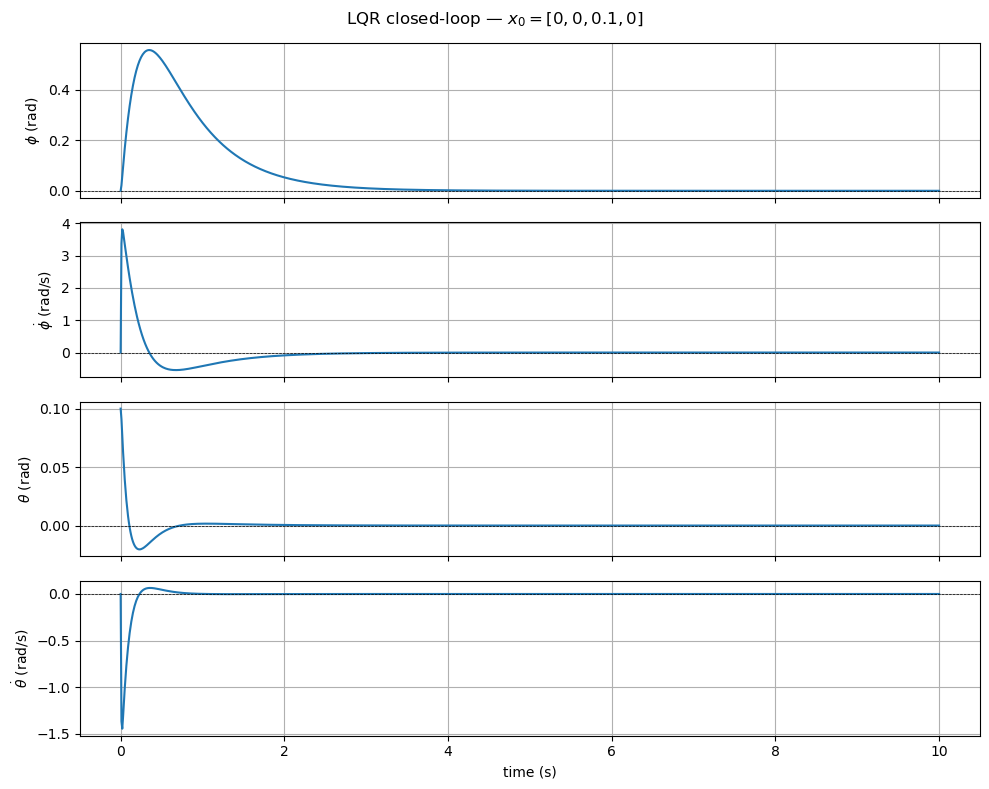
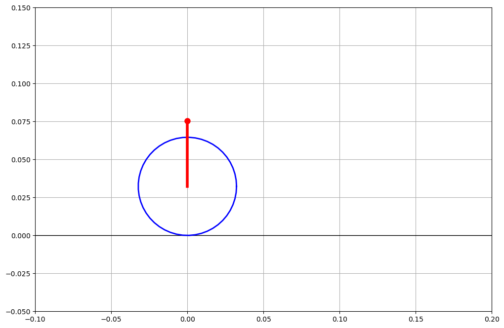
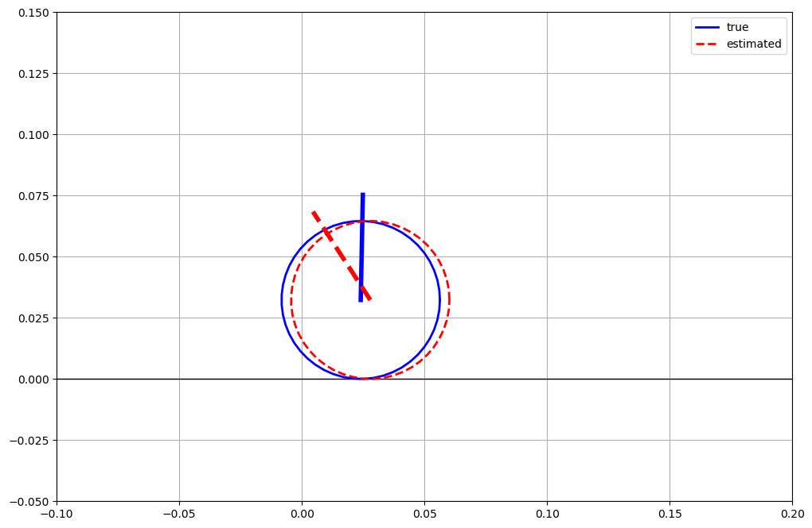
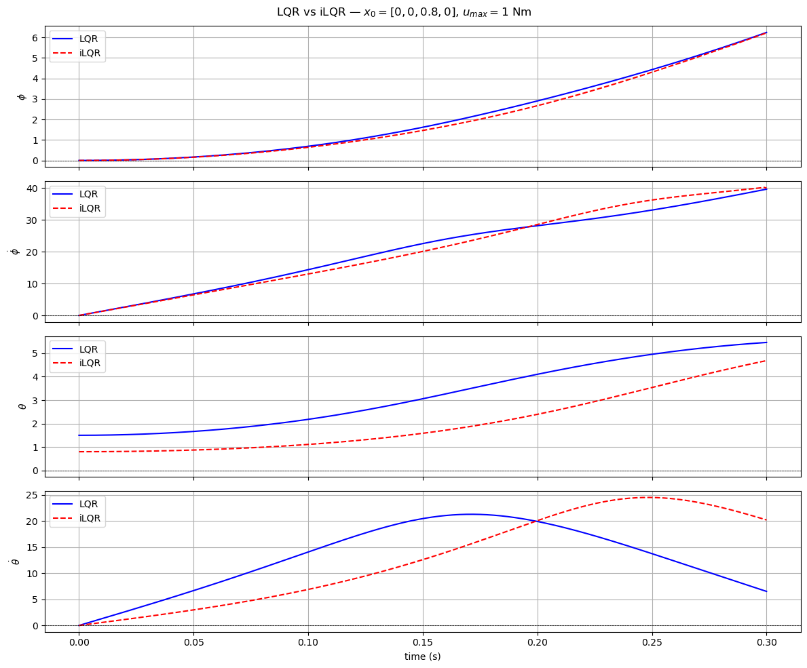
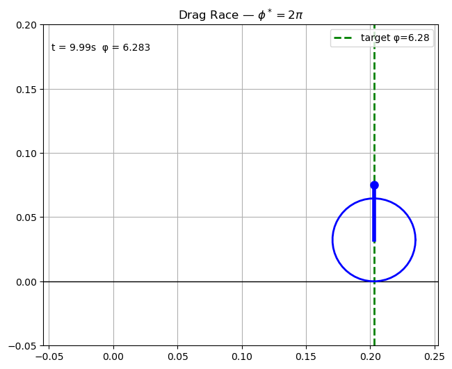
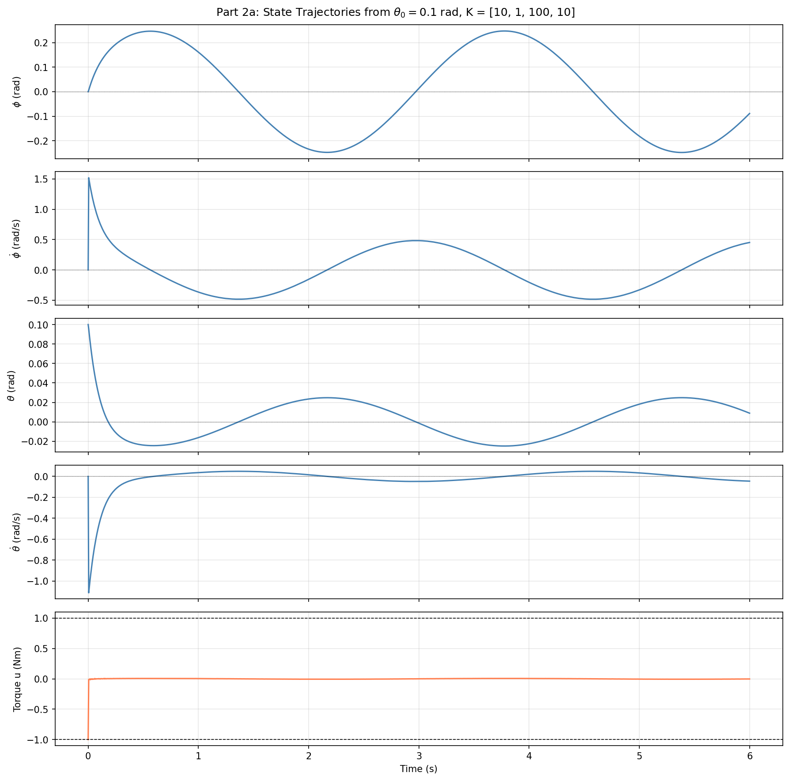
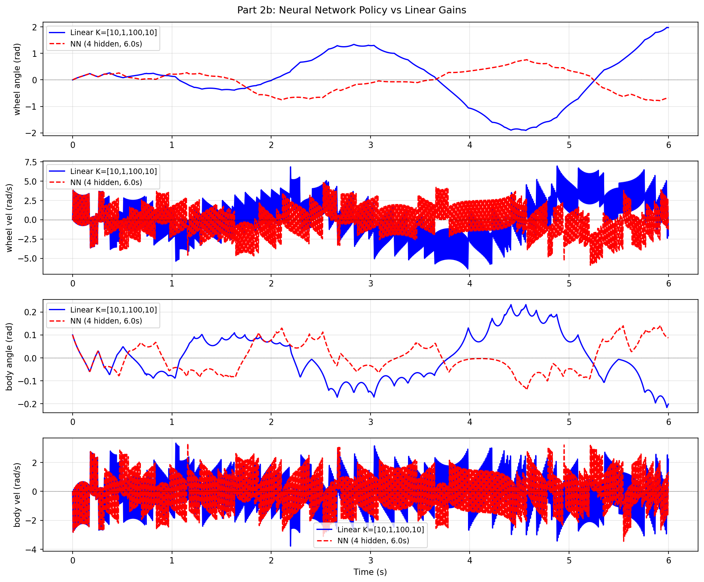

Controls project: two-wheeled inverted pendulum, LQR vs. NN
Trying different control strategies to control a simulated inverted pendulum.
A two-wheeled inverted pendulum is a good testbed: it falls over on its own, but the model is simple.
It's a body balanced on top of a wheel axle, like a small Segway. One motor torque drives the wheels. The state is the wheel angle, the body tilt, and how fast each is changing. Linearized around upright, the system is fully controllable and fully observable, so it can be balanced and its state can be estimated from sensors.
LQR balances it from a small tilt.
LQR finds the feedback gains that best trade off keeping the robot upright against using too much torque. I weighted the body tilt heavily since that's what makes it fall. Starting tilted 0.1 rad, it settles back to upright within about 2 seconds.


A Kalman filter estimates the full state from noisy sensors.
In real life you don't get perfect measurements. I measured the wheel angle, body tilt and body rate with added noise and used a Kalman filter to estimate all four states. It tracks the wheel well. The tilt estimate is the noisiest, which makes sense since I gave that measurement the most noise.


For big moves, LQR's straight line approximation breaks down, so I used iLQR.
LQR is designed around upright, so it struggles far from it. iLQR keeps re-linearizing along the trajectory and improving it, which handles the full nonlinear dynamics. For a "drag race", the wheel had to spin one full turn (2π) while keeping the body up. It got there in about 3 seconds with the tilt staying under 0.08 rad.



A small neural network policy can balance it too.
Last, I swapped the controller for a small neural network that maps the state straight to a torque. It was first trained to copy a linear controller, then fine-tuned to keep the robot balanced as long as possible. With 4 hidden neurons it kept the pendulum up for the full 6 second run, and its body tilt stayed within about ±0.15 rad, compared to about ±0.22 rad for hand-tuned linear gains under the same conditions.


References
- Anderson, B. D. O., & Moore, J. B. (1990). Optimal Control: Linear Quadratic Methods. Prentice-Hall.
- Kalman, R. E. (1960). A new approach to linear filtering and prediction problems. Journal of Basic Engineering, 82(1), 35–45.
- Li, W., & Todorov, E. (2004). Iterative linear quadratic regulator design for nonlinear biological movement systems. ICINCO 2004.